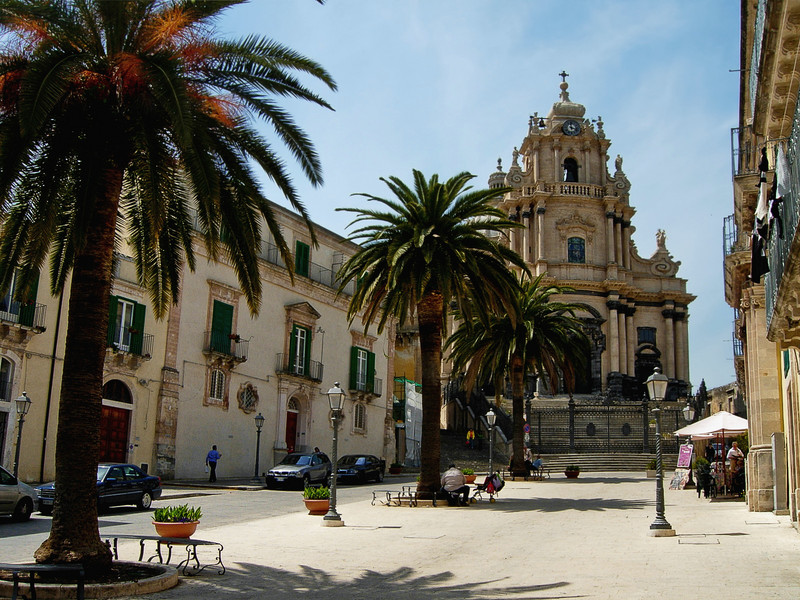

PIAZZA SAN GIORGIO
Ragusa Ibla
Piazza San Giorgio è situata in posizione panoramica
all’interno dell’antico tessuto urbano di Ragusa Ibla, la
piazza si distingue per la sua scenografia architettonica,
caratterizzata da una disposizione teatrale degli edifici e
da una monumentale scalinata che conduce alla
cattedrale.
L’elemento dominante della piazza è il Duomo di San Giorgio, una delle chiese più imponenti e spettacolari della Sicilia barocca. L’edificio, costruito nel XVIII secolo, presenta una facciata monumentale ricca di decorazioni, colonne, statue e dettagli architettonici che creano un effetto scenografico di grande impatto visivo.
La facciata si sviluppa in più ordini sovrapposti e culmina in una grande cupola che domina l’intero panorama urbano di Ragusa Ibla. L’interno della chiesa è altrettanto maestoso, con navate ampie, altari decorati e opere d’arte che testimoniano la ricchezza culturale e religiosa della città.
La piazza è caratterizzata anche da una monumentale scalinata che collega il livello urbano alla cattedrale. Questa scalinata contribuisce a creare una prospettiva teatrale, tipica dell’urbanistica barocca, in cui l’architettura è pensata per guidare lo sguardo del visitatore verso il punto focale della composizione architettonica.
Intorno alla piazza si affacciano numerosi palazzi storici appartenuti alle famiglie nobiliari della città, tra cui il Palazzo Arezzo di Trifilettie altri edifici barocchi che contribuiscono a definire l’eleganza complessiva dello spazio urbano. Le facciate degli edifici presentano balconi decorati, portali monumentali e dettagli scultorei tipici dell’architettura siciliana del XVIII secolo.
Grazie alla sua armonia architettonica e al suo valore storico, l’area di Ragusa Ibla, inclusa Piazza San Giorgio, fa parte del sito UNESCO delle città tardo barocche della Val di Noto.
La configurazione attuale di Piazza San Giorgio è strettamente legata alle conseguenze del devastante Terremoto della Sicilia del 1693, che distrusse gran parte delle città della Sicilia sud-orientale, tra cui Ragusa. Il sisma provocò la quasi totale distruzione del centro abitato medievale, causando enormi perdite umane e materiali.
Dopo la catastrofe, la città venne ricostruita seguendo nuovi criteri urbanistici e architettonici con uno stile barocco diffuso in tutta la Val di Noto.
Piazza San Giorgio venne progettata come uno dei principali spazi urbani della nuova città ricostruita. La piazza assunse fin da subito un ruolo centrale nella vita religiosa e sociale della comunità, diventando il luogo in cui si concentravano le attività civili e le celebrazioni religiose più importanti
La ricostruzione della piazza e della cattedrale fu guidata dall’architettoRosario Gagliardi, uno dei protagonisti del barocco siciliano. Grazie alla sua visione architettonica, Piazza San Giorgio divenne un perfetto esempio di spazio urbano barocco, caratterizzato da prospettive scenografiche e da un forte dialogo tra architettura e paesaggio.

Dal punto di vista urbanistico, Piazza San Giorgio rappresenta uno degli spazi più suggestivi dell’intero centro storico di Ragusa Ibla. La piazza si sviluppa in una posizione leggermente sopraelevata rispetto al resto del quartiere, offrendo scorci panoramici sulla città e sulle vallate circostanti.
L’organizzazione dello spazio riflette i principi dell’urbanistica barocca l’architettura non è pensata come elemento isolato, ma come parte di una composizione scenografica in cui edifici, scalinate e prospettive urbane contribuiscono a creare un’esperienza visiva armoniosa.
Oggi la piazza è uno dei luoghi più frequentati della città, sia dai residenti sia dai visitatori. Durante il giorno ospita turisti che visitano la cattedrale e passeggiano tra i vicoli storici del quartiere, mentre la sera diventa uno spazio di incontro animato da ristoranti, caffè e attività culturali.
Piazza San Giorgio è inoltre il centro di numerose celebrazioni religiose e manifestazioni cittadine, che trasformano lo spazio urbano in un luogo di aggregazione collettiva. La piazza mantiene quindi il suo ruolo storico di punto di riferimento sociale e culturale per la comunità di Ragusa Ibla.


Piazza Municipio, Agrigento

Piazza Marina, Palermo

Piazza Duomo, Enna

Piazza Garibaldi, Caltanissetta

Piazza Garibaldi, Trapani